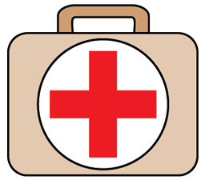
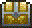
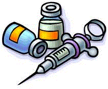
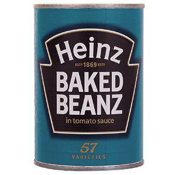
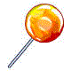
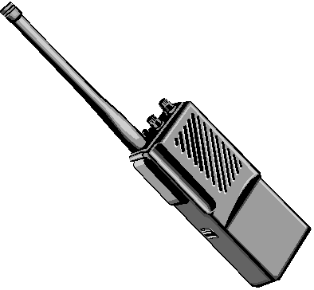

[Game Instructions]
This page can be opened up again in the Help tab. After clicking run/OK, the player will spawn randomly in the world.
Zombies move randomly around the world.
If the player gets too close to a zombie, it will proceed to chase and attack the player until either one dies
or the player becomes out of reach.
The player can heal himself by opening the player's inventory by pressing 'I' on the Keyboard.
Killing a zombie will give the player a chance to receive random items (ammo/bandages).
Killing chests in the game will give the player beneficial items and possibly Key items to win the game.
After finding all of the essential items, the player will be given the option to continue playing or exit the game.
*How to win: After obtaining 5 "Key Items", open up your inventory and click "use" on any of the key items.
Controls:
-Move character: Arrow Keys
-Change Player's direction/Aim: WASD Keys
-Melee Attack: Spacebar
*Attacks anything touching the player. If there are multiple things, the player will attack a random target.
-Shoot/Fire: 'F' Key
-Open Inventory: 'I' Key
-Quick Heal: 'H' Key
Guide/Characters:
-The Player
Health: 20 Damage: 2

Yes, this is you.
You're a little green guy that is permanently stuck in a frightened stance and can magically shoot swords.
You're melee attack (Spacebar) deals only 2 damage while your swords('F') deal 5. But be careful with your swords as you only have a limited amount.
You're goal is to stay alive, find 5 Key Items and escape. Or you can stay and see how long you'll last.
-Zombie
Health: 10 Damage: 4

These guys are your classic zombies. They move around randomly in the world minding their own business.
But if you get too close, they'll see you and chase you and will try to eat you.
While they have half as much health as you, they deal quite alot of damage and if there's a swarm of them, you're gonna need alot of bandages...
However if you kill one, you gain 10 exp and a chance to receive a random item (ammo/bandages).
-Bandages
Heals 3 health points

These little things are your life savers. You only start out with 3 of them so try not to waste them.
You can check how many bandages you have by opening your inventory ('I') or you can view it on the Message bar next to all your other stats.
To use them, you'll have to open up your inventory, click on one of them, and click "Use".
-Chests
Health: 5

Keep on a lookout for these things as they are SUPER beneficial to you.
Breaking open one of these chests gives you random items such as ammo or bandages. If you're lucky, you might even get a Key Item.
Key Items can only be found by breaking open these chests.
-Key Items



These are all the things that you need to find in order to escape/win.
If you look closely, you can see that these Key Items consist of: Vaccine, a boat, Can of beans, a lollipop, and an emergency radio.
These items don't do anything. But once you have 5 of any of these items, you can click 'use' and win the game.
Each key item is worth 100 points.
Source Code: https://github.com/bippity/GridworldGame